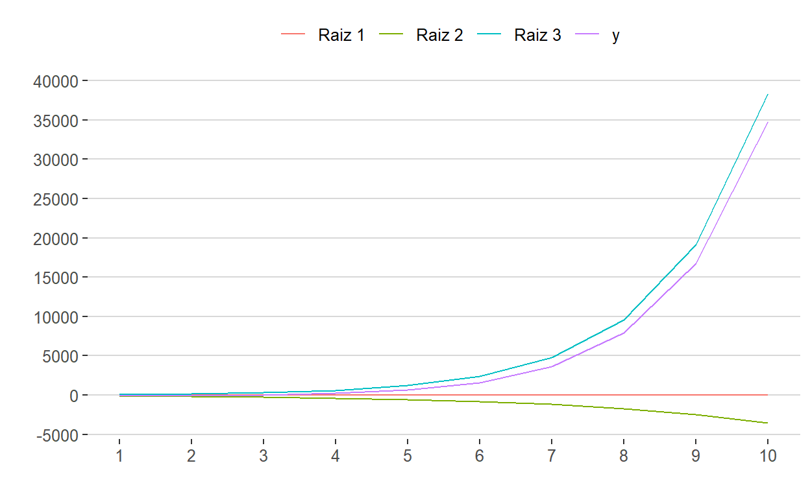

Equações de Ordem Superior
Como já vimos, a equação linear em diferença de ordem n terá a sua solução analítica e estabilidade dependentes das n raízes do seu polinômio característico. Ainda, a condição do módulo de todas as raízes ser menor que a unidade continua a ser necessária para garantir a estabilidade da série no longo prazo.
Exercício 1
Seja a equação de ordem 3, com \(\small y_0 = 400\), \(\small y_1 = 420\), \(\small y_2 = 450\):
\[ 1y_{t+3} -4y_{t+2} +4.8y_{t+1} -1.6y_{t+0} = 100 \]
Ela possuirá três raízes características. Simulando, notamos que a série \(\small y_t\) apresenta uma trajetória explosiva não oscilatória e sem ciclos. Logo, as raízes serão reais e positivas e haverá ao menos uma raíz com módulo maior que a unidade.
Temos que:
a3 <- 1
a2 <- -4
a1 <- 4.8
a0 <- -1.6
y0 <- 400
y1 <- 420
y2 <- 450
g <- 100
t <- 10
Para simular essa série vamos, antes, construir a função de órbita de terceira ordem:
Simulando a série:
Analisando as raízes (do polinômio característico):
# Vetor de coeficientes do polinomio
coefs <- c(a0, a1, a2, a3)
# Raizes
roots <- polyroot(coefs) %>% round(digits = 3)
roots
[1] 0.553+0i 1.447+0i 2.000+0i# A parte real das raizes
lambda = Re(roots)
lambda
[1] 0.553 1.447 2.000O steady state é dado por:
yp <- g / (a0 + a1 + a2 + a3)
yp
[1] 500Como há 2 raízes maiores que a unidade, a série é explosiva. Logo, o ponto fixo é um repulsor. Além disso, as três raízes são reais e positivas, o que descarta a existência de oscilações ou de ciclos (como já havíamos previsto, dado o comportamento do gráfico).
Assim, a solução explícita será dada pela combinação linear dos termos exponenciais tal que:
\[ \begin{align} & y_t = A_1(\lambda_1)^t + A_2(\lambda_2)^t + A_3(\lambda_3)^t + g \\ & y_t = A_1(0.553)^t + A_2(1.447)^t + A_3(2.000)^t + 500 \end{align} \]
onde os \(\small \lambda_i\) são as raízes. Com as três condições iniciais, determinamos as constantes arbitrárias A1, A2 e A3, por meio do sistema determinado resultante da substituição de y0, y1, y2 para t = 0, 1, 2 na solução explícita:
\[ \begin{cases} y_0 = A_1(0.553)^0+A_2(1.447)^0+A_3(2.000)^0 + 500 \\ y_1 = A_1(0.553)^1+A_2(1.447)^1+A_3(2.000)^1 + 500 \\ y_2 = A_1(0.553)^2+A_2(1.447)^2+A_3(2.000)^2 + 500 \\ \end{cases} \]
ou
\[ \begin{equation} \begin{bmatrix} y_0 \\ y_1 \\ y_2 \end{bmatrix} = \begin{bmatrix} A_1 \\ A_2 \\ A_3 \end{bmatrix} \cdot \begin{bmatrix} \lambda_1^0 & \lambda_2^0 & \lambda_3^0 \\ \lambda_1^1 & \lambda_2^1 & \lambda_3^1 \\ \lambda_1^2 & \lambda_2^2 & \lambda_3^2 \\ \end{bmatrix} \end{equation} \]
# Para achar A1, A2 e A3
v <- c(lambda[1]^0, lambda[1]^1, lambda[1]^2,
lambda[2]^0, lambda[2]^1, lambda[2]^2,
lambda[3]^0, lambda[3]^1, lambda[3]^2)
# L: matrix com os lambdas
L <- matrix(data = v, ncol = 3)
# B: vetor com as condições inicias
B <- c(y0, y1, y2) - yp
# X: Vetor com os A_i
X <- solve(L, B)
X
[1] -49.19536 -88.27182 37.46718Portanto:
\[ \begin{equation} \begin{bmatrix} A_1 \\ A_2 \\ A_3 \end{bmatrix} = \begin{bmatrix} -49.19 \\ -88.27 \\ 37.46 \end{bmatrix} \end{equation} \]
Simulando os três componentes de forma independente:
# Função que calcula a orbita de cada Eq em diferença de ordem 3
orbita_parc_3 <- function(X, lambda, t) {
raiz1 <- vector(mode = "numeric", length = t)
raiz2 <- vector(mode = "numeric", length = t)
raiz3 <- vector(mode = "numeric", length = t)
soma <- vector(mode = "numeric", length = t)
for (i in 1:t) {
raiz1[i] <- X[1]*lambda[1]^i
raiz2[i] <- X[2]*lambda[2]^i
raiz3[i] <- X[3]*lambda[3]^i
soma[i] <- raiz1[i] + raiz2[i] + raiz3[i]
}
out <- cbind(raiz1, raiz2, raiz3, soma)
colnames(out) <- c("Raiz 1", "Raiz 2", "Raiz 3", "y")
return(out)
}
orbita_parc_3(X = X, lambda = lambda, t = t) %>%
ts() %>%
autoplot(facets = F) +
theme_hc() +
scale_x_continuous(breaks = 1:10) +
scale_y_continuous(breaks = seq(-5000, 40000, 5000)) +
scale_colour_discrete("") +
theme(legend.position = "top")

Exercício 2
Seja a seguinte equação em diferença (também de ordem 3), com \(\small y_0 = 0\), \(\small y_1 = 2\), \(\small y_2 = 4\):
\[ 1y_{t+3} - 1y_{t+2} - 2y_{t+1} +2y_{t+0} = 0 \]
Temos que:
a3 <- 1
a2 <- -1
a1 <- -2
a0 <- 2
y0 <- 0
y1 <- 2
y2 <- 4
g <- 0
t <- 10
Como já possuímos a função de órbita de terceira ordem, basta usá-la:
O gráfico nos leva a inferir que temos novamente uma série explosiva e sem oscilações nem ciclos, o que indica a presença de raízes reais; e ao menos uma raíz unitária (maior que 1).
Analisando as raízes (do polinômio característico):
# Vetor de coeficientes do polinomio
coefs <- c(a0, a1, a2, a3)
# Raizes
roots <- polyroot(coefs) %>% round(digits = 3)
roots
[1] 1.000+0i -1.414+0i 1.414+0i# A parte real das raizes
lambda = Re(roots)
lambda
[1] 1.000 -1.414 1.414Note que temos uma raiz com módulo unitário e outras duas com módulo maior que a unidade. Além disso, temos uma raiz negativa, o que produziria oscilações (e explosivas). Mas esas oscilações não aparecem no gráfico. Haveria uma explicação?
Como a equação é homogêna (\(\small g(t) = 0\)), o steady state é 0, portanto:
# Para achar A1, A2 e A3
v <- c(lambda[1]^0, lambda[1]^1, lambda[1]^2,
lambda[2]^0, lambda[2]^1, lambda[2]^2,
lambda[3]^0, lambda[3]^1, lambda[3]^2)
# L: matrix com os lambdas
L <- matrix(data = v, ncol = 3)
# B: vetor com as condições inicias
B <- c(y0, y1, y2) # yp = 0 (steady state)
# X: Vetor com os A_i
X <- solve(L, B)
X
[1] -4.0024175 -0.1212868 4.1237043Para simular os três componentes de forma independente, usamos a função orbita_parc_3, que construimos anteriormente:
Vemos que a raíz 2 de fato oscila. Contudo, como a série é explosiva, esse comportamento é pouco identificável no comportamento da série.
O Modelo de Hansen-Samuelson
O Modelo econômico de Hansen-Samuelson é dado pelas equações:
\[ \begin{align} & C_t = bY_{t-1} \\ & I_t = k(C_t-C_{t-1}) \\ & G_t = G>0 \\ & Y_t = C_t + I_t + G_t \end{align} \]
onde,
- \(\small b \in (0,1)\): propensão marginal a consumir
- \(\small k\): coeficiente de aceleração do investimento
- \(\small G\): gastos públicos (consumo autônomo)
Podemos analisar o comportamento da renda nacional e por substituição, do consumo das famílias \(\small C_t\) e dos investimentos \(\small I_t\) nessa economia hipotética.
Primeiramente, definimos os parâmetros (como dentre as equações acima aparece um termo \(\small Y_{t-1}\) e um \(\small C_{t-1}\), esses devem ser fornecidos para a inicialização do modelo):
b <- 0.9
k <- 0.7
G <- 10
t <- 100
Y0 <- 10
C0 <- 2
Sabemos que esses são os parâmetros que servem de input para a função que vamos construir para analisar esse modelo que, por sua vez, retorna os valores das séries para \(\small C_t\), \(\small I_t\) e \(\small Y_t\). Adicionalmente, construiremos, também, uma série para os valores de \(\small I = I_{ind} + G\) (na função a seguir, Iind corresponde ao \(\small I_t\) nas equações do modelo acima):
# Função que calcula a orbita do modelo de Hansen-Samuelson
orbita_HS <- function(b, k, G, Y0, C0, t) {
Y <- vector(mode = "numeric", length = t)
C <- vector(mode = "numeric", length = t)
I <- vector(mode = "numeric", length = t)
Iind <- vector(mode = "numeric", length = t)
C[1] <- b * Y0
Iind[1] <- k * (C[1] - C0)
Y[1] <- C[1] + Iind[1] + G
for (i in 2:t) {
C[i] <- b * Y[i-1]
Iind[i] <- k * (C[i] - C[i-1])
Y[i] <- C[i] + Iind[i] + G
I[i] <- Iind[i] + G
}
out <- cbind(C, I, Iind, Y)
return(out)
}
Observando o gráfico e a evolução as séries podemos inferir um padrão estável. Para validar tal inferência, podemos analisar o estado estacionário, em que \(\small Y_t = Y_{t−1}\) e portanto, se espera que que \(\small C_t = C_{t−1}\), \(\small I_t = I_{t−1}\) etc. Olhando novamente as equações do sistema no longo prazo:
\[ \begin{cases} C^* = b\cdot Y^* \\ I_{ind}^* = 0 \\ I^* = G \\ Y^* = C^* + I^* \end{cases} \]
Substituindo \(\small C^*\) e \(\small I^*\) em \(\small Y^*\):
\[ Y^* = b \cdot Y^* + G \]
Logo,
\[ Y^* = \frac{G}{1-b} \]
Substituindo os valores atribuídos aos parâmetros na simulação, temos que:
\[ \begin{cases} Y^* = 100 \\ I^* = 10 \\ C^* = 90 \end{cases} \]
que são justamente os valores para os quais as séries convergiram. Portanto, podemos afirmar que se trata de um modelo estável.
Análise das raízes
Manipulando as equações que definem o modelo de Hansen-Samuelson, obtemos uma equação em diferença de ordem 2 em \(\small Y_t\), que como já vimos, deve produzir uma série com comportamento convergente no longo prazo a \(\small Y^∗ = 100\) (o atrator):
\[ Y_t - b\cdot (k+1)\cdot Y_{t-1} + b \cdot k \cdot Y_{t-2} = G \]
Para realizar a análise dinâmica, precisamos avaliar as raízes do polinômio característico:
\[ p(\lambda) = \lambda^2 + a_1\lambda + a_0 = 0 \]
onde,
\[ \begin{cases} a_2 = 1 \\ a_1 = -b(k+1) \\ a_0 = bk \end{cases} \]
A análise qualitativa a partir dos coeficientes considera as três restrições (para que o sistema seja estável) a seguir:
\[ \begin{cases} a_0 + a_1 + 1 & > 0 \\ a_0 - a_1 + 1 & > 0 \\ a_0 & < 1 \end{cases} \]
Antes de fazer essa análise qualitativa, entretanto, vamos analisar essas raízes de forma quantitativa, igual feito nos exercícios anteriores:
a2 <- 1
a1 <- -b * (k + 1)
a0 <- b * k
# Vetor de coeficientes do polinomio
coefs <- c(a0, a1, a2)
coefs
[1] 0.63 -1.53 1.00[1] 0.765+0.212i 0.765-0.212iComo as raízes apresentam componentes complexos, vamos calcular o módulo e o ângulo (só é preciso usar uma das raízes pois as raízes complexas sempre aparecem em conjuntos de 2 e essas possuem o mesmo módulo):
[,1]
R 0.794
theta 0.270Como o módulo é menor que a unidade, as séries apresentam ciclos amortecidos (não explosivos).
Análise qualitativa
Voltando, agora, à análise qualitativa das raízes, vamos ver se satisfazem as restrições apontadas. Relembrando que:
- \(\small \Delta > 0\): Raízes reais e diferentes
- \(\small \Delta = 0\): Raízes reais e iguais
- \(\small \Delta < 0\): Raízes complexas
Independente da natureza das raízes, a estabilidade é garantida quando as raízes não são maiores que a unidade.
Porém, a partir do polinômio característico, é possível estabelecer condições de estabilidade para o caso de raízes reais a partir da análise dos coeficientes:
- \(\small \Delta = 0 \implies a_0 < 1\)
- \(\small \Delta > 0 \implies a_1-2 < \pm \sqrt{\Delta} < a_1+2\):
- \(a_0 > a_1 -1\)
- \(a_0 > -a_1 -1\)
- \(\small \Delta < 0 \implies a_0 < 1\)
Juntando:
\[ \begin{equation} \begin{cases} a_0 + a_1 + 1 & > 0 \\ a_0 - a_1 + 1 & > 0 \\ a_0 & < 1 \end{cases} \end{equation} \]
rest1 <- 1 + a1 + a0 > 0
rest2 <- 1- a1 + a0 > 0
rest3 <- a0 < 1
cbind(rest1, rest2, rest3)
rest1 rest2 rest3
[1,] TRUE TRUE TRUEComo podemos ver, as três condições são atendidas.
Porém, esse é o caso para os b e k definidos no início do exercício. Podemos analisar essas condições de forma geral, para quaisquer b e k. Como já mostrado:
\[ \begin{cases} a_2 = 1 \\ a_1 = -b(k+1) \\ a_0 = bk \end{cases} \]
Juntando essas restrições e condições, temos que para o sistema ser estável:
\[ b < \frac{1}{k} \]
Do polinômio característico, temos que as raízes são tais que:
\[ \lambda_1, \lambda_2 = \frac{b(k+1)}{2} \pm \frac{\sqrt{\Delta}}{2} \]
onde \(\small \Delta = b^2(k+1)^2 - 4bk\).
Para identificar a características dinâmicas da renda, precisamos analisar \(\small \Delta\):
\[ \Delta = b^2(k+1)^2 - 4bk \gtreqqless 0 \]
isolando b:
\[ b \gtreqqless \frac{4k}{(k+1)^2} \]
Assim, para analisar essas condições sobre b, podemos plotar as seguintes equações:
\[ \begin{cases} b = \frac{1}{k} \\ b = \frac{4k}{(k+1)^2} \end{cases} \]
func1 <- function(x) 1 / x
func2 <- function(x) (4 * x) / (x + 1)^2
ggplot(data = data.frame(x = 0)) +
aes(x = x) +
xlim(0, 4) +
xlab("k") +
ylim(0, 1.6) +
ylab("b") +
ggtitle("Localização das raízes") +
stat_function(fun = func1, aes(colour = "func1")) +
stat_function(fun = func2, aes(colour = "func2")) +
geom_hline(yintercept = 1, linetype = "dashed") +
geom_vline(xintercept = 1, linetype = "dashed") +
annotate("text", x = 0, y = 0.9, label = "A", size = 5) +
annotate("text", x = 1.2, y = 0.5, label = "B", size = 5) +
annotate("text", x = 2.4, y = 0.7, label = "C", size = 5) +
annotate("text", x = 3.2, y = 0.9, label = "D", size = 5) +
theme_hc() +
scale_y_continuous(breaks = seq(0, 1.6, 0.2), limits = c(0, 1.6)) +
scale_color_manual("", values = c("red", "blue"),
labels = c(~frac(1,k),~frac(4*k,(k+1)^2))) +
theme(plot.title = element_text(size = 18, hjust = 0.5, colour = "black"),
legend.position = "top")
Como apontado no gráfico, há 4 regiões possíveis:
- A: \(\small b < \frac{1}{k}\) e \(\small b > \frac{4k}{(1+k)^2}\)
- B: \(\small b < \frac{1}{k}\) e \(\small b < \frac{4k}{(1+k)^2}\)
- C: \(\small b > \frac{1}{k}\) e \(\small b < \frac{4k}{(1+k)^2}\)
- D: \(\small b > \frac{1}{k}\) e \(\small b > \frac{4k}{(1+k)^2}\)
Como havíamos dito, a primeira restrição para a estabilidade do sistema é que \(\small b < \frac{1}{k}\), critério que apenas as regiões A e B atendem. Na região A, em que \(\small \Delta > 0\), as condições de estabilidade são que \(\small a_0 > a_1 - 1\) e \(\small a_0 > -a_1 - 1\). Na região B, em que \(\small \Delta < 0\), a condição de estabilidade é que \(\small a_0 < 1\).
O modelo de Hicks
O modelo de Hicks é uma alteração do modelo de Hansen-Samuelson (HS), e é dado pelas seguintes equações:
\[ \begin{align} & Y_t = C_t + I_t \\ & C_t = bY_{t-1} \\ & I_t = I'_t + I''_t \\ & I'_t = k(Y_{t-1}-Y_{t-2}) \\ & I''_t = A_0(1+g)^2 \\ \end{align} \]
onde,
- \(\small I''\): Investimento autônomo, que cresce a uma taxa exógena \(\small g\)
- \(\small I'\): Investimento induzido pelo acelerador e dependente da demanda agregada.
- \(\small k < 1\): condição de estabilidade
Assim como para o modelo de HS, primeiramente definimos os parâmetros de inicialização da simulação:
b <- 0.5 # propensão marginal a consumir
k <- 0.2 # acelerador do investimento
g <- 0.05 # taxa de investimento autônomo
A0 <- 1
Y0 <- 20
Y1 <- 5
t <- 80
Sabemos que esses são os parâmetros que servem de input para a função que vamos construir para analisar esse modelo que, por sua vez, retorna os valores das séries para \(\small C_t\), \(\small I_t\) e \(\small Y_t\). Adicionalmente, construiremos, também, séries para os valores de \(\small I' = I_{ind}\) e \(\small I'' = I_{aut}\).
# Função que calcula a orbita do modelo de Hicks
orbita_hicks <- function(b, k, g, A0, Y0, Y1, t) {
C <- vector(mode = "numeric", length = t)
Iind <- vector(mode = "numeric", length = t)
Iaut <- vector(mode = "numeric", length = t)
I <- vector(mode = "numeric", length = t)
Y <- vector(mode = "numeric", length = t)
C[1] <- b * Y0
Iind[1] <- k * (Y1 - Y0)
Iaut[1] <- A0 * (1 + g)^1
I[1] <- Iind[1] + Iaut[1]
Y[1] <- C[1] + I[1]
C[2] <- b * Y1
Iind[2] <- k * (Y[1] - Y1)
Iaut[2] <- A0 * (1 + g)^2
I[2] <- Iind[2] + Iaut[2]
Y[2] <- C[2] + I[2]
for (i in 3:t) {
C[i] <- b * Y[i-1]
Iind[i] <- k * (Y[i-1] - Y[i-2])
Iaut[i] <- A0 * (1 + g)^i
I[i] <- Iind[i] + Iaut[i]
Y[i] <- C[i] + I[i]
}
out <- cbind(C, I, Iind, Iaut, Y)
return(out)
}
Note que as séries parecem explodir. Contudo, devemos considerar que \(\small I_t = A0 \cdot (1 + g)^t\) cresce exponencialmente a uma taxa g constante. Logo, havendo um padrão de convergência, não podemos esperar que o equilíbrio seja fixo, pois todas as variáveis interagem entre si.
Análise de estabilidade
Por substituição, obtemos a equação em diferenças de ordem 2 em \(\small Y_t\):
\[ 1Y_t − (b + k)Y_{t−1} + kY_{t−2} = A_0(1 + g)^t \]
cujo polinômio característico é dado por:
\[ \lambda^2 - (b+k)\lambda + k = 0 \]
Assim:
\[ \begin{cases} a_2 = 1 \\ a_1 = -(b+k) \\ a_0 = k \end{cases} \]
Sejam as condições de estabilidade:
\[ \begin{equation} \begin{cases} a_0 + a_1 + 1 & > 0 \\ a_0 - a_1 + 1 & > 0 \\ a_0 & < 1 \end{cases} \end{equation} \]
Aplicando os valores do exercícios:
a2 <- 1
a1 <- -(b+k)
a0 <- k
rest1 <- 1 + a1 + a0 > 0
rest2 <- 1- a1 + a0 > 0
rest3 <- a0 < 1
cbind(rest1, rest2, rest3)
rest1 rest2 rest3
[1,] TRUE TRUE TRUELogo, para o conjunto de valores dos parâmetros usados na simulação, teremos um sistema estável, com um equilíbrio móvel, dada a forma de \(\small g(t)=A_0(1+g)^t\).
Calculando o discriminante e as raízes temos que:
# Vetor de coeficientes do polinomio
coefs <- c(a0, a1, a2)
coefs
[1] 0.2 -0.7 1.0Como as raízes apresentam componentes complexos, vamos calcular o módulo e o ângulo:
[,1]
R 0.447
theta 0.671Como o módulo é menor que a unidade, as séries apresentam ciclos amortecidos (não explosivos)
A solução particular será dada por:
\[ Y^p_t = K(1 + g)^t \]
Substituindo \(\small Y^p_t\), \(\small Y^p_{t−1}\) e \(\small Y^p_{t−2}\) na eq. em diferenças, temos que:
\[ K = \frac{A_0(1+g)^2}{(1 + g)^2 − (b + k)(1 + g) + k} \]
condicionado a um denominador positivo \(\small \forall t\). Assim, neste caso, temos a solução homogênea e particular dadas por:
# Calculando K
K <- (A0 * (1 + g)^2) / ((1 + g)^2 - (b + k) * (1 + g) + k)
K
[1] 1.942731# Talvez usar Y[1] e Y[2] mesmo
A3 <- Y0 - K
A4 <- (1 / sin(theta)) * ((Y1 - K * (1 + g)) / R - A3 * cos(theta))
rbind(A3, A4)
[,1]
A3 18.05727
A4 -12.08601orbita_hicks_analitica <- function(A3, A4, R, theta, t) {
Yh <- vector(mode = "numeric", length = t)
Yp <- vector(mode = "numeric", length = t)
Y2 <- vector(mode = "numeric", length = t)
for (i in 1:t) {
Yh[i] <- (R^i) * (A3 * cos(theta * i) + A4 * sin(theta * i))
Yp[i] <- K * (1 + g)^i
Y2[i] <- Yh[i] + Yp[i]
}
out <- cbind(Yh, Yp, Y2)
return(out)
}
Comparando os dois resultados (simulação e analítico) para Y:
Y <- orbita_hicks(b = b, k = k, g = g, A0 = A0, Y0 = Y0, Y1 = Y1, t = t)[,5]
analit <- orbita_hicks_analitica(A3 = A3, A4 = A4, R = R, theta = theta, t = t)
result <- cbind(analit, Y)
head(result, n = 10)
Yh Yp Y2 Y
[1,] 2.960132159 2.039868 5.0000000 8.050000
[2,] -1.535460863 2.141861 0.6064004 4.212500
[3,] -1.666209648 2.248954 0.5827446 2.496375
[4,] -0.859586240 2.361402 1.5018158 2.120469
[5,] -0.268828340 2.479472 2.2106438 2.261335
[6,] -0.016448261 2.603446 2.5869975 2.498936
[7,] 0.042193819 2.733618 2.7758118 2.704089
[8,] 0.032821772 2.870299 2.9031207 2.870530
[9,] 0.014545591 3.013814 3.0283594 3.019882
[10,] 0.003624649 3.164505 3.1681292 3.168706result %>%
ts() %>%
autoplot(facets = F) +
theme_hc() +
scale_x_continuous(breaks = seq(0, 80, 10)) +
scale_y_continuous(breaks = seq(0, 100, 10)) +
scale_color_discrete("") +
theme(legend.position = "top")

Utilizando Y[1] e Y[2] ao invés de Y0 e Y1:
Y <- orbita_hicks(b = b, k = k, g = g, A0 = A0, Y0 = Y0, Y1 = Y1, t = t)[,5]
A3 <- Y[1] - K
A4 <- (1 / sin(theta)) * ((Y[2] - K * (1 + g)) / R - A3 * cos(theta))
rbind(A3, A4)
[,1]
A3 6.1072687
A4 0.1262162analit <- orbita_hicks_analitica(A3 = A3, A4 = A4, R = R, theta = theta, t = t)
result <- cbind(analit, Y)
head(result, n = 10)
Yh Yp Y2 Y
[1,] 2.1726321586 2.039868 4.212500 8.050000
[2,] 0.3007079366 2.141861 2.442569 4.212500
[3,] -0.2235615876 2.248954 2.025393 2.496375
[4,] -0.2165697457 2.361402 2.144832 2.120469
[5,] -0.1069347938 2.479472 2.372537 2.261335
[6,] -0.0315871856 2.603446 2.571859 2.498936
[7,] -0.0007471691 2.733618 2.732871 2.704089
[8,] 0.0057875959 2.870299 2.876086 2.870530
[9,] 0.0042005896 3.013814 3.018014 3.019882
[10,] 0.0017841436 3.164505 3.166289 3.168706Em ambos os casos, a séries de Y da simulação e da forma analítica se sobrepôem, mesmo que apresente valoris inicias divergentes.